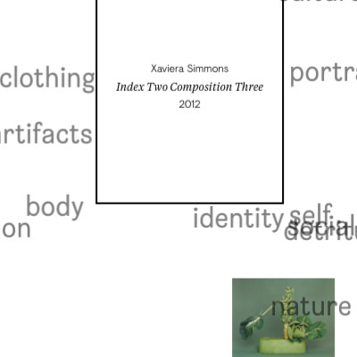

<link rel="import" href="../../bower_components/polymer/polymer.html">
<link rel="import" href="../../bower_components/iron-ajax/iron-ajax.html">
<link rel="import" href="../../bower_components/iron-image/iron-image.html">
<link rel="import" href="../elements/section-teaser.html">
<link rel="import" href="../shared-styles.html">
<dom-module id="page-frontend">
    <template>
        <style include="shared-styles">
            :host {
                display: block;
            }

            header {
                text-align: center;
                margin-bottom: 50px;
            }

            #copy {
                display: inline-block;
                text-align: left;
                width: 50%;
                margin-left: 25px;
                margin-right: 25px;
            }

            section-teaser {
                margin-top: 50px;
                width: 100%;
            }

            #blank {
                display: inline-block;
                width: 35%;
                margin-right: 25px;
                margin-left: 25px;
            }

            #images, #videos {
                text-align: center;
            }

            video {
                max-width: 1200px;
                width: calc( 100% - 50px );
                height: auto;
                -webkit-box-shadow: 0 2px 7px -1px rgba(0,0,0,0.57);
                -moz-box-shadow: 0 2px 7px -1px rgba(0,0,0,0.57);
                box-shadow: 0 2px 7px -1px rgba(0,0,0,0.57);
            }

            #videos {
                margin-bottom: 25px;
            }

            iron-image {
                display: inline-block;
                width: 100%;
                max-width: 1200px;
                height: auto;
                --iron-image-width: 100%;
                --iron-image-height: auto;
            }

            #home {
                background-color: rgba( 50, 50, 50, 0.05 );
            }

            iron-icon {
                position: absolute;
                top: 50%;
                left: 50%;
                transform: translate(-50%, -50%);
                fill: black;
            }

            @media only screen and (max-width: 768px) {
                #copy {
                    width: 90%;
                    margin-left: 5%;
                }

                #blank {
                    display: none;
                }

                iron-image {
                    margin-bottom: 25px;
                }

                video {
                    width: calc( 100% - 35px );
                }
            }
        </style>
        <main>
            <header>
                <div id="copy">
                    <h1>[[data.title]]</h1>
                    <h3>[[data.subTitle]]</h3>
                    <p id="body"></p>
                </div>
                <div id="blank"></div>
            </header>
            <template is="dom-if" if="{{data.videos}}">
                <div id="videos">
                    <template is="dom-repeat" items="{{data.videos}}">
                        <video autoplay loop>
                            <source src="{{item}}" type="video/mp4">
                        </video>
                    </template>
                </div>
            </template>
            <div id="images">
                <template is="dom-repeat" items="{{data.images}}">
                    <iron-image src="{{item}}" fade preload></iron-image>
                </template>
            </div>
            <section-teaser
                    id="frontend"
                    class="reverse copy-top"
                    title="Other Frontend examples"
                    body="<ul><li><a href='/frontend/gap'>GAP</a></li><li><a href='/frontend/hello-v'>Hello V</a></li><li><a href='/frontend/subaru'>Subaru</a></li><li><a href='/frontend/fruit-of-the-loom'>Fruit of the Loom</a></li><li><a href='/frontend/chevy'>Chevy</a></li><li><a href='/frontend/guggenheim'>Guggenheim</a></li><li><a href='/frontend/youtube'>Youtube</a></li></ul>"
                    >
                <div class="grid">
                    <a href="/frontend/gap"></a>
                    <a href="/frontend/hello-v"></a>
                    <a href="/frontend/subaru"></a>
                    <a href="/frontend/fruit-of-the-loom"></a>
                    <a href="/frontend/chevy"></a>
                    <a href="/frontend/guggenheim"></a>
                    <a href="/frontend/youtube"></a>
                </div>
            </section-teaser>
            <iron-ajax id="ajax" auto handle-as="json" on-response="_onResponse" on-error="_onError" last-response="{{data}}"></iron-ajax>
        </main>
    </template>

    <script>
        Polymer({
            is: 'page-frontend',

            properties: {
                data: {
                    type: Object
                },
                tail: {
                    type: String,
                    observer: "_onTailChanged"
                }
            },

            _onTailChanged: function() {
                if ( this.tail.path.length ) {
                    this.$.ajax.url = '../content' + this.tail.path + '.json';
                }
            },

            _onResponse: function() {
                this.$.body.innerHTML = this.data.body;
            },

            _onError: function() {
                console.log('_onError');
            }
        });
    </script>
</dom-module>
